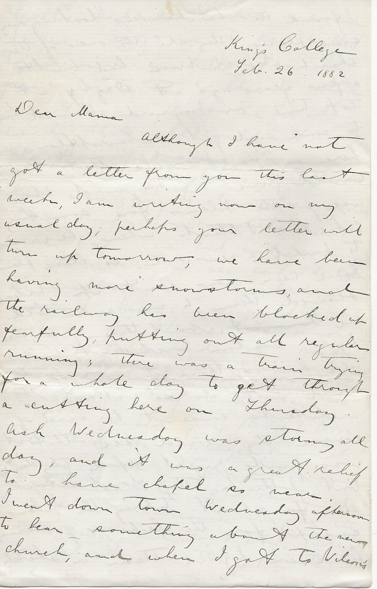

Kings College
Feb. 26, 1882
Dear Mama
Although I have not got a letter from you this last week, I am writing now on my usual day; perhaps your letter will turn up tomorrow, we have been having more snowstorms, and the railway has been blocked up fearfully putting out all regular running; there was a train trying for a whole day to get through a cutting here on Thursday. Ash Wednesday was stormy all day, and it was a great relief to have chapel so near.
I went down town Wednesday afternoon to hear something about the new church, and when I got to Wilson’s I found the churchworkers looking over some plans; they are the ones of the church Mr. Ambrose had built a few years ago at Digby. At that time Mr. Maynard allowed him to come and get subscriptions here, on the promise that he would give Mr. Maynard the use of the plans for something like $50 I think, when he wanted to build a new one; so these plans have now been sent up. Wilson showed them to me, and told me about them; they are by a Boston architect, but I told him I thought Mr. Ambrose could not do without the architect’s consent; he said of course they would see that it was quite right before they decided, but I think they don’t altogether care about taking the plans, except for the cheapness of them; however I gave them a sketch Willie had sent up to me, and Wilson is going to see Willie tomorrow in Halifax.
I at first wrote to Willie to come up at once, but he wrote back that he could not leave for fear of missing Tom illegible. How is it that you did not tell me that Tom illegible was going to leave so soon.
Last Monday our entertainment came off; we had not as many in the Hall, as we expected, for the walking was rather bad, and many were afraid to venture out so far; however it made a respectable audience. Readings music etc. occupied about an hour and a half, and then the curtain raised for Bon & Bon. We had the stage rigged in very good style, and a grand instrumental overture, piano & violin. Of course I wore the renowned tail coat etc., Bon was short and the opposite to me in every way, his tone of voice was like a cracked screech all the time. Mrs. Bouncer was blooming, and at first many thought she was really a woman. The audience were in fits from first to last, and I could hear Martell screeching with laughter right through.
Lord Lovell took immensely, and Harley’s song too, ‘The Last Rose of Summer’ sung in a spirituous style as he said. I enjoyed it myself immensely; and judging by all that has been said of it since, the audience must have liked it: we have got heaps of praises, and two or three who have seen it acted by professionals in London and Edinburgh say they enjoyed it more on Monday night than ever before. DeFormity says I ought to go on the stage. Of course a thing like this could not go off without some busy body having something to say about it not looking well for us to have theatricals here, and for Divinity students to take part; but still we have only heard of one person so foolish.
On Tuesday night I was at a dance at the King’s, and now all these entertainments etc. are over, and I am mighty glad of it. A dance once in a while I think does us no harm here, in fact it is good; for we can take a day’s exercise in that way, and work in the day time, but these readings are quite different, they always want practice and work fixing up. These readings you know, have been to pay the debt off the rector; they have pretty nearly cleared it I think.
Yesterday afternoon the club was for a twelve mile tramp, we went across the Avon at the bridge here, and crossed back at one about six miles higher up, nearly all the distance on each side we travelled over marsh land, one long level stretch, I had no idea before there was so much marsh land here, hundreds of acres. The cap you made for me has been quite honored, the whole club now have caps made just like it, except that the mackeral is a shade lighter, as none so dark could be got here; the sewing society was given the job, with yours as a pattern: it was quite nice yesterday, all having the same caps.
I will enclose a programme. I have marked the illegible, it was fine. There goes the chapel bell, so I must close. With love to all and kisses to youngster I remain yr. loving son E.A.H.
P.S.
Remember me to friends.